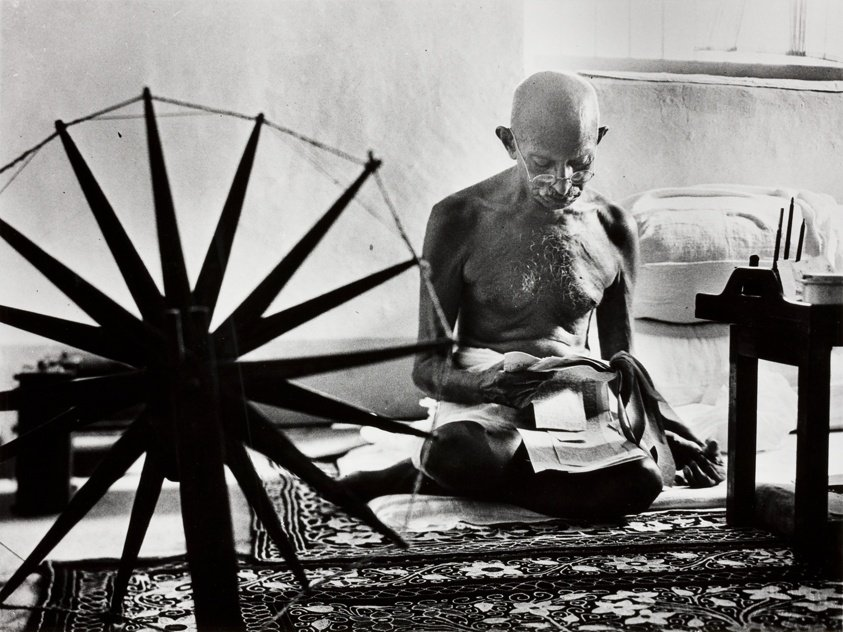

Mahatma Gandhi Spinning
Margaret Bourke-White · April 1946 · Gelatin silver print · 37.1 × 49.5 cm · Art Institute of Chicago
In copyright. Look and learn: shown for study, not for download.
Margaret Bourke-White was forty-one and on the staff of Life when she photographed Gandhi at his spinning wheel in April 1946. She had joined the magazine in 1936 as its first woman photojournalist. She went on to record the violence of partition in 1947, and in 1948 she interviewed and photographed Gandhi a few hours before he was assassinated. This print hung in the Art Institute's 1956 exhibition of her photography.